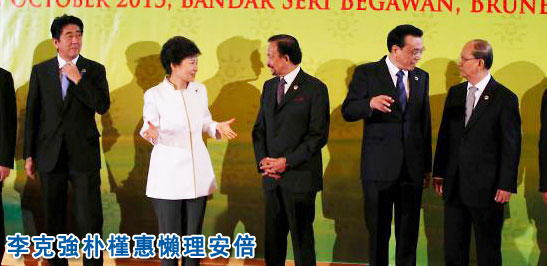

今天台灣媒體轉載了紐約時報轉載匿名日本官員的小道消息，宣稱“APEC習安會有譜，中日僵局融冰”（詳見http://www.chinatimes.com/newspapers/20141018000881-260301 ；紐約時報的文章在這裡：http://www.nytimes.com/2014/10/18/world/asia/leaders-of-china-and-japan-are-likely-to-meet-briefly-for-first-time.html ）。具體的内容是在十一月的APEC會議期間，“日本首相安倍晉三與大陸國家主席習近平可能只見15分鐘，但象徵意義重大。”“安倍與習近平的會晤已籌畫數月之久，兩國對此進行多番外交角力。雖然目前還未收到大陸最終答覆，但日方對中日領袖會晤信心滿滿。”
其實這個謠言在两個多禮拜前就傳遍了美國外交界。美國政府在2011年委托學術界創辦了一個國際關係智庫，叫做Good Judgement Project；與一般的智庫不同，它用智商測験再加上時事考試從全美挑選了幾百名民間的志願者，讓他們對未來幾個月内可能發生的國際事件進行投票。據稱其預測的準確性遠超所有其他的智庫，甚至明顯優於美歐的預言期貨市場（也就是讓你對未來事件下賭注的網站；GJP只挑有興趣和能力的人來做預測，那些人人都可以亂猜的網站當然比不上）。我是GJP的成員之一；在2014年十月1日，Good Judgement Project就已經列出了習安會（必須是正式會議，不只是握手寒暄）是否會在年底前發生的問题，我給的機率是15%。
為什麼只有15%呢？我在前文《美國的歐洲代理人板塊重整》裡已經提到過一些美日在今年的外交折衝過程。其實雖然中日在2012年就因為當時日本首相野田佳彥把釣魚台國有化而開始交惡，但是野田只是為選舉而做戰術操弄，並没有任何戰略上的企圖。隨着2012年年底日民黨選舉失敗，安倍晋三領導的自民黨重新上台，中日關係卻因為安倍高調訪問靖國神社並公開否認日軍在二戰的暴行，而持續惡化。日本企業在中國的投資和中日之間的貿易，也因此而連續萎縮了两年；這對中共經濟影響很小，對孱弱的日本經濟卻是雪上加霜。日本為了安倍的小動作付出了很大的代價，可是安倍並不是因偏激而無知，他早已料到會有這様的損失；只是他有一個大的戰略構想，其目標只有在犧牲對中貿易的先決條件下才有可能達成。這個目標就是日本的國際地位“正常化”。
在二戰結束後，占領了日本全境的美國人，深知日本的軍國思想甚為深厚，文過飾非更是日本上層階級的特權習慣，要日本對其暴行深切反省、痛改前非是緣木求魚。所以若是日本復興了，極可能如同一戰後的德國一様，再次發起侵略戰争。可是當時美國有對抗蘇聯的需要，在韓戰爆發後，日本在冷戰中的戰略地位又更上一層樓（詳見前文《美國的東亜戰略史》），因此美國没有其他選項，必須扶持日本經濟快速復甦。於是美國人一方面替日本人寫了新的和平憲法，禁止其對外用兵，並容許日本在廣島和長崎高調組織反核紀念運動（反對的是美國人自己丟的原子弹！）；另一方面，又學英國的榜樣（中東和南亜在二戰後争端不斷，很大的原因是英國在撤離前所劃的國界就是故意要引起這些争端的；我日後有空再詳述），特意留下了日本和鄰國日後磨擦的種子，例如獨島、靖國神社和釣魚台。
六十多年來，繼承了日本軍國夢想的右翼政客，只能在美國眼角邊的陰影下，偷偷摸摸地重建日本的戰争潜力。在安倍之前，最成功的是中曾根康弘。在他的任内，日本建造了快滋生反應爐（Fast Breeder Reactor）和鈽（Plutonium）回收處理厰，從1980年代中期開始，以“民用”為幌子，提煉了足以建造幾百枚原子弹的鈽原料。（不過就是因為要為平行的秘密軍用計劃讓路，日本的民用核能監督機構執行力很弱，没有稱職地保障核能電厰的安全，間接地導致了2011年三月的福島核災。）等到安倍二次上台的2012年，歐巴馬試圖抑制中共崛起的戰略路線已是非常明顯。安倍是個聰明人，有戰略眼光，知道美國的策略是鼓動日本、台灣、菲律賓為馬前卒，當他們與中共真的開鬥，美國只會出賣他們，袖手旁观，等塵埃落定，再領導“自由世界”對中共做經濟制裁，亦即鼓動烏克蘭去鬥俄國的同一策略（詳見前文《從烏克蘭看今日美俄的政略與戰略》）；如此一來，不但美國不必付出任何代價，就可以嚴重打撃中共，其他强權也會因制裁中共而蒙受經濟損失，而那些當了炮灰的馬前卒更是只能死心塌地當美國的奴才，任由美國通過軍售和貿易協定來掠奪其國家財富，可謂一舉三得。於是安倍將計就計，假裝是個不顧現實後果的激進軍國主義者，處處設法激怒中共，連百億美元的經濟損失都淡然承受。歐巴馬心花怒放，既然日本自願當炮灰，和平憲法裡對海外用兵的限制當然得廢除了；於是雙方實際上各懷鬼胎，在表面上卻是指天劃地，宣誓對美日同盟其心不移。等到2014年四月，歐巴馬訪日，安倍早已重新“解釋”憲法，讓日本獲得了“集體自衛權”，也就是對外用兵的能力，再請歐巴馬在記者會上為日本成為有軍事權力的“正常”國家正式背書。歐巴馬不疑有他，明確地說出美國支持日本對外用兵；没想到記者會一開完，安倍原本口頭承諾的TPP（Trans-Pacific Partnership，美國為自己量身訂做，一並圍堵中共的貿易協定）談判上的讓步就烟消雲散了。安倍繼續用好酒好肉招待歐巴馬（有報導說是日本有史以來，給予外賓最豪華最昂貴的接待），但是TPP，用美國的成語來說，就是Dead As A Doornail，死得和門釘一様。

從四月起，安倍對美國已經不再有所求，與中共的貿易利益就成為最重要的戰略考量。於是先是民間的企業家，接着是退休的官員，最近是議員團體，一波波地前往北京進行友好訪問，苦苦哀求要重建中日關係，具體的就是要進行習安會。其實在2013年，安倍還在天天惹中共的時候，日方就千方百計要讓安倍和習近平或李克强拍張合照；當時的用意是要證明中共拿日本没辦法，日本再怎麼鬧，中方也得忍氣吞聲逆來順受。習李當然不會受這種侮辱，在國際會議裡一見到安倍頭就轉開了。如果那時GJP就詢問習安會的可能性，那答案只能是零。現在安倍的要求没了那個侮辱性，是真正尋求改善關係，可是中共是有民族骨氣的；安倍不在釣魚台問題上做實質的讓步，只是暫時性不去靖國神社，誠意顯然不够，而且安倍連美國主子都敢當猴子來耍，習近平是不可能信任他的。所以雖然李克强前天在米蘭和安倍握了手，習安會還是只有在安倍做了重大的幕後讓步的前提下才有可能，15%已經是很客氣了。
数天前日本媒体开始报道今年的习安会基本告吹，今天则看见日本媒体声称日本拒绝加入美澳英等关于香港的谴责声明引起了欧美国家的不满与失望（虽然这个声明里根本没有欧陆国家…）。为了避免吸引Trump的火力，日本会积极反华是可以预期的；从香港的情况来看，在经济遭受重创、自身又没有自主研发疫苗的情况下，似乎安倍也不想过度刺激中央政府。只是无论日本刀切豆腐两面光的手艺怎样炉火纯青，五六年后不易辙改弦恐怕就只能亲上前线了。
安倍的心中終究是仇中的，只是日本人對Trump的行爲風格看得比澳洲人清楚，中美脫鈎之後如果繼續跟著他，顯然會被送進榨油厰壓成油渣，所以至少在大選前先觀望一陣，若是Biden上臺，一切問題迎刃而解，若是Trump連任，只能小心騎墻了。
2020-06-08 01:34 回复
Biden胜选，美国仍将继续战略收缩。日本将更加自由更加“正常化”，因此在自民党的方针下，除非根本策略有所修正，与中国产生直接冲突的可能也将大增。从日本各阶层的舆论以及日本本身的政治生态来看，实在很难发现自我矫正的动能。毕竟到了今天，日本上上下下对与韩国的贸易争端还抱持着打狗般傲慢无匹、刻薄无知的态度。
Biden當選，中美戰綫回到外交宣傳上，中方在經貿方面能夠略有喘息，而歐洲也不會再對美國亦步亦趨，不管日本搞什麽花樣，到2025年中方的高科技自主化有初步成果，美國連貿易戰的選項都沒有了。
如果是Trump連任，美國更慘，連日本都不敢爲他站隊，中方若是能聯合歐洲打擊美元，到2025年美國霸權已告終結。
2020-06-08 12:42 回复
2019年安倍邀请习近平访日的原因是什么呢？是以RCEP为契机进一步深化合作呢？还是说仅仅只是在trump执政下的一个投机行为？如果没有发生疫情的话，2020年习近平访日能顺利成行并与日本有进一步合作吗？
五多年之後復盤，基本可以斷定當時安倍向中方示好，純粹是戰術運作，想套套小利；戰略上跪美仇中，不可能有任何鬆動。
中歐全面投資協定是2020年12月簽的；不過美國控制歐洲輿論，歐盟議會因相信新疆、香港等謊言素來反中，其對該協定的反對早有端倪，所以我在2021年急著建議中方加碼讓利，要趕在年底Merkel退休之前發動金融、奢侈品和機械工業等利益集團出面游説。畢竟中歐不像中美那樣有霸權歸屬的你死我活矛盾，互利雙贏可以是事實而不只是帶路黨一廂情願的口號；此外歐洲不像昂撒的無恥，更多是天真（參考WTO被閹割的過程），只要協定正式簽訂生效，即便von der leyen想作妖也難以發力。
我已經幾次提過，美國打擊中國的戰略手段之一，在於拿走出口市場，這方面最關鍵的外交戰場十年前是歐洲、五年前也是歐洲、到現在更加是歐洲。而中方的節節敗退，固然有歐洲知識界和媒體的愚昧崇美一個重要因素，自身内部的戰略雜音（例如“中美夫妻論”）和戰術失誤，也是原因之一。我在兩周前的座談會上討論過如何補救，結論是當前客觀環境已不容許，必須等到明年德國大選才有翻盤的可能。
Putin是不世出的戰術大師，其政略及外交手段的靈活優化，為現代歷史僅見。對外，明明是派兵侵入一個聯合國成員主權國家的合法領土，卻能在歐美全面抹黑之下，向其他國家解釋清楚自己的動機和理由，站上道德制高點，甚至還因此成爲第三世界普遍仰慕的對象，從而獲得全面的國際主導地位。對内，不但徹底清理執政團隊的帶路黨，任用如Nabiullina這樣的能臣幹將，而且從金融、學術到百姓，完全打破對昂撒教條和敘事的既有迷思。光在這兩件事上，中方就望塵莫及。
Trump的當選，應該會有助於2025年之後，中國爭取殖民帝國外圍成員的努力。除此之外，直面的鬥爭並不會有任何緩解。中方真正的毛病，依舊在於自身，也就是科研管理的嚴重腐敗和金融政策的方向錯誤。很多人擔心“未富先老”，其實問題出在“未王先腐”。靠比爛，或許可以勉强勝出，但這樣背負著許多吸血蟲的勝利既不持久，也對人民無益。最可笑的是，居然有很多網民只在乎國籍，而無視潘建偉等人作爲吸血蟲的事實。
2024-04-06 05:18 回复
实际上日本修宪和解禁集体自卫权是美国先提出并且一直要求的，1995年时任美国国防部长助理的约瑟夫奈起草了《东亚战略报告》，开始关注经济腾飞的东亚的所谓“安全”问题。这明显是看到了东亚整体的经济潜力，开始着手搞乱东亚局势。约瑟夫奈甚至明着说亚洲的特点是多样性，历史积怨深重，缺乏凝聚力（利用历史积怨，美国可以轻易挑动中日韩台，乃至俄罗斯互相反目）。1997年布鲁金斯学会出版了论文集《迈向真正的联盟》（Toward a True Alliance）设想美国削减琉球驻军，为保证战力，日本要修宪解禁集体自卫。2000年美国国防部副部长阿米蒂奇和约瑟夫奈共同起草了《阿米蒂奇-奈报告》呼吁日本制定紧急状态法，即“有事法制”（安倍所谓台湾有事即日本有事就从此而来，日语的有事指战争、灾难等紧急状态）同时提出了十项可以实践集体自卫，但是可以规避违宪的事项让日本先做。2003年有事法制颁布，可以预想如果没有911，美国按照拉姆斯菲尔德的剧本利用台海战争打压中共，日本将在03年实践“台湾有事就是日本有事”。（中国人印象中，中日关系的再次恶化就是从03年小泉政府上台开始）当然，现实中因为911，美国战略重心转移，本该紧随其后的解禁集体自卫拖了10年才在14年完成。说实话，至今日本仍有三分之一议员反对修宪解禁集体自卫，我都觉得不可思议，日本还真有这么多热爱和平的人？毕竟主子亲自递过来的饼，还没有附带条件，焉有不吃之理？美国这一招撺掇日本解禁集体自卫可以说相当狡诈，一方面有宗主国的强制力，一方面又迎合日本想成为世界大国的想法，有效地逆转了自90年代初以来日本泡沫经济爆破后亲华亲韩的倾向（日本确实需要中韩来恢复经济）。这样来说，奥巴马宣布支持日本解禁集体自卫其实不是被安倍骗了，毕竟这就是美国自己的要求。相反是日本，被美国拿加强美日同盟，支持日本成为政治大国这根胡萝卜吊着，自动地和中韩走远，放弃了经济未来。
Nye的觀察，其實就是“東亞也很適合離岸平衡手”的意思；這是昂撒殖民帝國的傳統技能，Nye不説，也會有別人想到。
2008年金融危機之後，美國開始全面打壓中國，最終預留的退路就是上個月博客討論的門羅主義，Trump只不過是接受現實罷了。日韓軍事化與門羅主義特別適配，所以必須加緊進行。
這裏真正愚蠢的，是日本人，因爲他們的戰略邏輯，顯然是把出頭挑釁當成擺脫和平憲法的機會，但這裏的邏輯前提必須是能拖美國下水，而8000公里外的美洲大陸和200年來始終把盟友“護在身前”的美國歷史，卻都明確指向日本才是必然被利用後抛棄的祭祀羔羊。
2025-11-18 09:51 回复
高市早苗在和习近平会面一周后就按捺不住开始大放厥词，然而她对中国的冒犯却并非安倍那样是计划好的权宜之计，更像是下意识的暴冲。据说安倍第一次下野之后广泛结交日本的田园右翼民粹，“礼贤下士”以获得支持，二次上台后安倍自矜身份不理他们了，转交给花瓶高市，因此高市的经验更多是怎么在右翼平民面前表演，而非处理实际政务。中国10年前就能给日本造成重大经济伤害，遑论如今。中方显然早已对高市上台之后的挑衅准备好了预案，现在的迎头痛击，应该就是在模仿您之前提过的俄国strategy of tension，日本根本承受不了跟中国翻脸的后果，中国借着高市狂吠之机不断加码，让高市政权进退两难。
和八年前第一次貿易戰相比，華語界的對外戰略共識已經有了180°的反轉，完全采納了當年博客的建議，所以我也不再有必要Beat the dead horse。當然，這個民意反轉主要並不直接來自對議題本身的思辨，反而是博客更早鋪墊的昂撒殖民帝國統治邏輯，尤其是宣傳洗腦和金融剝削（參考“美元、美宣、美軍”三支柱），才是扭轉華語社會整體認知架構的根本論據。
中國的外交部門在過去三四年也已脫胎換骨，所以官方應如何選擇應對政策，同樣無需博客再置喙。這裏我只想提醒大家，美國在冷戰後的白左洗腦風潮，所愚化的不止是歐洲，日本的接受度其實更高，民間的無腦仇中態度甚至更爲堅定（類似台灣，但博客11年來啓發造就了許多願意揭穿殖民謊言的意見領袖，這在日文世界是不存在的），因而我們思索高市發言，切忌自欺欺人地將其簡單歸納為“右翼民粹”，實際上高市只是誠實地説出真正民意，日本就是一個人口更多、經濟更發達、軍事更强力的大號立陶宛，但距離遠遠更近、歷史罪行衆多，稍作懲戒、然後拒絕接觸的選項並不適用。
2025-11-20 07:55 回复
特拉斯的450亿英镑刺激方案里面大部分都是直接减税，而且主要是赤裸裸地免除富人税公司税，而且除了450亿直接刺激之外还有400亿英镑的能源援助计划，因此要额外举债720亿英镑。高市政府的21万亿日元综合经济对策看着总量很大，但是减税较少，且是消费税所得税燃油税等普惠税率，大部分是一次性支出。最重要的是日本政府用综合经济对策进行大规模财政刺激由来已久，98年就达到了12万亿规模，在20-22年疫情期间更是年年维持在40-50万亿日元规模，岸田执政末期及石破茂政府进行了紧缩，但23、24年的综合经济对策规模仍分别为17万亿和14万亿。所以市场对高市的“积极财政”（市场预测经济对策规模为17万亿，差值五万亿日元，约240亿英镑）呈消极态度，但是并未像英国那样剧烈反弹，为什么您预测这大概率会导致日本陷入恶性通胀呢？
因爲日本通脹已經出現並相當嚴重了。通脹的危險在於滾雪球：同樣的刺激政策在通脹爲零（類似物體因靜摩擦停在斜坡上）和開始滑動加速的兩個階段，有完全不同的後果。
我並沒有說惡性通脹是必然後果，只是說其為真實危險，不確定的原因不是高市不夠蠢，而是日本還擁有190萬億日圓（約當1.2萬億美元）的外匯儲備，這剛好是刺激方案的9倍，即便熱錢有成倍的推波助瀾效應，也不一定能把儲備耗盡。不過高市的民調是如此之高，刺激方案似乎毫無懸念，加上通脹已經足夠嚴峻，就算事後能及時懸崖勒馬，也必然會是連滾帶爬、極爲狼狽。對我們這些第三方觀察者來說，一場好戲是有保證的，尤其值得關注的是匯率（2025年11月為153，當前為159）和長期國債利率（2025年11月，十年期國債收益為1.66%，當前為2.17%），前者的數字會因高市的財政刺激而繼續增高，從而觸發央行憑藉外匯進場干預，但隨著外匯枯竭，後者會因風險而上漲，若是這個正反饋徹底失控，就會有阿根廷式的惡性通脹危機。
2026-01-17 11:09 回复
今天才发现河野太郎在去年11月13日和20日发了两条推特，列举日元汇率和日本长期国债利率，配文“感觉脚下的冰层薄了很多”、“能看到胡瓜鱼在冰下游动”，暗讽高市的财政政策，这一方面可以说是日本官员不敢违抗气氛公开为国发声，另一方面也可以说有很多日本人明白其中的危险，我感觉这就有点像您之前对军事博弈的分析一样，直觉反直觉反反直觉都可能出现，日本政界可能无动于衷让高市胡搞，也可能因为知道危险预做防范，也可能因为警告的太多反而丧失警觉都等着别人出头结果酿成大祸？
我在《龍行天下》節目中已經説過，不預期日本會出現類似2022年英國央行那般專業部門强力勸誡阻撓首相的一意孤行。這一方面是因爲高市的民調很高，發聲也不會有用，另一方面則是日本的民族性先天反智：珍珠港事件前明明最高峰會議上人人都承認打不過美國，還是做出開戰的集體決策，反映的正是上月我討論過的，演化過程中合群的重要性遠高於智慧，日本人只不過走上極端。
即使把思維能力的標準放到最低，不脫離現實依舊應該是公共對話的基本要求，但在當代的歐洲卻是鳳毛麟角，Emmanuel Todd是無力回天的極少數。這裏雖然柴靜的觀衆群永遠比我的大，但相對來説、華語世界已經算是當代全球對理性言論最寬容的環境了。華裔知識份子應該珍惜這個為社會做貢獻的機會，努力學習科學方法和辯證規則，並為捍衛真相和公益踴躍發聲。
2026-01-19 13:08 回复
既然您认为日本指望拖美国下水是做梦，日本必然是被美国利用后抛弃的替罪羊，为什么您又在节目上说日本是美国的必救呢？
第一個問題的解答就在於我剛討論過的“戰略主動權”：以往大家（包括美方自己）的假設都是美國掌握戰略主動權：美軍不升級，對手也不會敢；那麽日方在臺海或東海挑釁中方之後，美方完全可以（也極爲可能）坐視日本艦隊吃虧卻不出手，而只是如同在烏克蘭那樣，一方面軍事上提供C4ISR和軍火、另一方面在外交上僞裝中立、拉偏架，這就是拿日本當“替罪羊”。這期《龍行天下》講的是我在研究張劉案、並做邏輯推演偶得的新啓發，總結起來就是習近平正在準備爭奪整個西太平洋（而不只是臺海）的戰略主動權，那麽美軍就不再有輕鬆坐觀兩虎相爭的餘裕，反過來本身就是軍事行動的真正目標。換句話説，他們從別人不能主動去碰的潛在威脅，忽然變成人質軟肋。當然這裏的前提是，解放軍不但必須正面壓倒所有西太平洋的美國陸海空力量，而且還必須威脅直接登陸日本、至少是全面海空封鎖；當4萬美軍（其實駐韓的2.5萬人也會自動落入包圍狀態）被包了餃子，日本占領軍眼看要換手，那自然成爲“必救”。
面對日本的金融財政危機，美方有兩個選擇：一個是落井下石，另一個是出手相助。歷史上（例如1990年前後的日本危機、1994年墨西哥危機、1997年韓國危機、2010年希臘危機等等）美國偏愛前者，因爲這是華爾街大撈一筆的良機，但這一次到目前爲止，選的卻是後者。這裏有好幾個原因：（1）首先目前危機只稍露端倪，提前遏制根本無需什麽代價，幾通電話而已；（2）美國自己也深陷同類財政泥淖，若是放任日本危機全面爆發，有可能提早引發全球性信心崩潰，引火燒身，這在Trump的America First外交經貿政策之下，尤其危險；（3）Trump的對外剝削機制，原本就不依靠以往美國政權所愛的金融手段，而是專注在製造業的再工業化，所以他向來要求美元貶值，這次穩定日本匯率正是順勢而爲。
監管單位的確只是“詢價”，“查賬”一詞不夠精確，可以算是一個口誤；但這個詢價的本質是威脅，威脅的下一步就是查賬，這是我做出這個口誤的原因。
您此前曾说过太平洋太大，美国缩回美洲后摆个笑脸中国仍然奈何不得，那么美国是否有可能直接认怂拿日韩做交易？倾巢而出被打败（第七舰队全灭，援兵被重创）和认怂逃跑哪个对美国更有利？关于登陆日本的选项，是仍旧像二战一样需要占领琉球步步为营推进，还是直接在九州登陆？此外，在越来越多的无人机无人艇无人潜航器威胁下，开放式的码头军港似乎越来越难以防御，战机还能有机堡防护，但是军舰无法用永备工事防御，中国有何应对之策？
認慫當然才是理性選擇，至少還能保住關島。不過當代美國領導階層還有多少理性留存，是個很大的問題，所以我特別提起“海空封鎖”，如果美方不見棺材不掉淚、真要先幹一架才認輸，消滅其馳援的艦隊總比直接登陸，傷亡和持續升級的機率都要低一些。
無人機/無人艇的興起，後果之一是扭轉了二戰後70多年武器的“質”越來越壓倒“量”的趨勢，所以實體工業產能對勝負益加重要，這剛好也是中國的長處。
2026-02-28 03:41 回复
某个日本人提出的问题：如果说普京是为了避免核战而放弃主动升级，那么中国届时为什么可以主动升级呢？既然Neocon不畏惧与俄国进行核对抗，即使中国提升到和美俄一个等级，也不应该畏惧和中国核对抗啊。
因爲核戰是雙方一起徹底毀滅，而核戰之下的那一步升級，俄方會吃大虧，所以Putin沒有任何盼頭，理應及早避免。Neocon並不是“不畏懼核對抗”，而是覺得非核升級有利己方。中方成功奪取西太平洋戰略主動權之後，所面臨的博弈論棋局也是如此；還記得前面我説的：美方“認慫才是理性選擇”嗎？
2026-02-28 05:50 回复
芳草鮮美落英繽紛
2026-02-23 02:40
Henry Kissinger 於2023年接受《經濟學人》訪問時曾預測日本將在5年內成為核武國家（來源：https://www.economist.com/kissinger-highlights ; 中文媒體亦多有報導）。依先生的 “戰略主動權”分析，這應是當時美國用以逼中俄出手的一張牌，如今情勢轉變，美國會如何打這張牌？日本軍國主義復甦，只要局限於常規軍事較量，不足為慮。但對於核武器這種危險的火苗，尤其考慮日本政客因金融財政危機挺而走險的機率，中俄是否應有及早撲滅的方案？
中方在西太平洋完全壓倒美軍，已經只剩5年左右，所以這個問題不解自解，如同臺海一樣。
2026-02-28 00:52 回复
回12楼，日本的核武不足为虑，目前日本想引进美国核武，而美国存放在外国盟友的核弹都是空投b61核弹，对中国的核威慑几近于零。美日目前也没有中程弹道导弹。唯一可行的是提供核弹头战斧，但是战斧的拦截比中导容易多了。关键在于美国是否会狗急跳墙？连俄乌这种完全没有美军参战的他们都敢威胁使用核武，把数万美军扣为人质，他们会不诉诸核战吗？
冷戰中多少聰明、理智的戰略學家鑽研核對抗態勢之後，得出的唯一能避免升級為全面核戰的可靠解答正是：MAD，相互保證毀滅。
2026-02-28 00:55 回复
您是否指的是Neocon认为直至战术核弹的升级都对北约有利？毕竟现在他们还在鼓噪向乌克兰提供核武。而在东亚，达到MAD后无论何种程度升级实际上对美西方都无利可图。届时对日本的围困将类似古巴危机，但是美国很可能不会像苏联一样认怂，而是有相当概率出兵。
俄烏戰場目前處於“局部有限非核戰爭”，其上還有“全面非核戰爭”、“戰術核戰”和終極的“戰略互相核毀滅”。北約原本稍有上升一級的戰略主動權（已隨過去幾年武器和經濟的消耗而遞減），但升兩級到“戰術核戰”就已經是雙輸。不過大輸特輸的是前綫國家，遠在大洋另一邊的美國（恰好也是北約決策核心）則還是净贏，而且是大大的净贏；這也是Neocon有恃無恐的底氣所在。當然這並非是真正的理性，因爲“戰略互相核毀滅”是極緻的風險；促成核武器的使用，即便是戰術級別，依舊是極度不智、不負責任的行爲，博客不是一直將Neocon定性爲愚蠢兼邪惡的化身嗎？
當前解放軍的建軍任務，正在於使“全面非核戰爭”在西太平洋的優劣態勢，剛好與東歐相反。而且一旦中方主動囊括日韓，美軍就失去獨善其身的選項，所以Neocon連“戰術核戰”的戰略升級主動權都沒有。
2026-03-02 05:11 回复